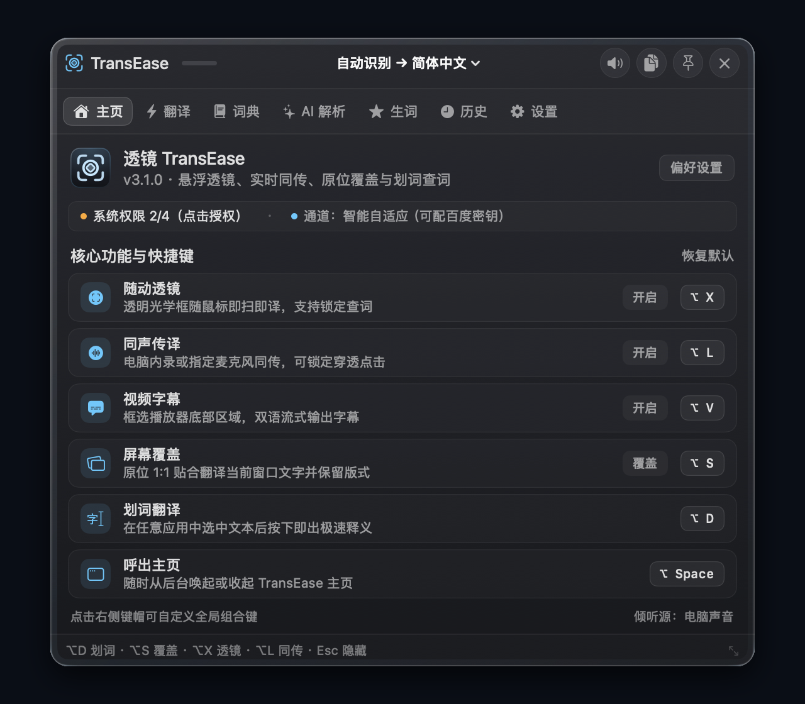

v3.1.0 · macOS 14.0+ 通用版与 Windows 原生客户端
视线所及，原位译达
吸附光标滑行的光学随动透镜、4 行阶梯保留的实时同传字幕、1:1 原位覆盖与国内直连通道，让外语阅读与视听自然无感。
DeepSeek-V3 Architecture: Multi-Head Latent Attention and Mixture-of-Experts
TransEase seamlessly captures and decodes visual framebuffers directly from macOS Display Services without introducing rendering latency.
No copy-pasting required. Simply hover your cursor for 0.18s, and the meaning naturally emerges in place.
在上方窗口内移动指针，体验鼠标悬停时的实时原位译文呈现

黑曜石光学质感，与桌面融为一体
采用原生 AppKit 与 SwiftUI 混合渲染，去掉繁杂界面与沉重边框，打开主页即可查看当前权限、网络通道与 6 项核心快捷键。
- 支持直接点按键帽录改 6 项全局热键，冲突自动互换
- 内置 4 项系统权限体检、8 语种离线模型与脱敏诊断导出
- 漫画竖排嵌字、密集图表排版与鼠标穿透锁定同传开箱即用
四大核心引擎，重塑跨应用翻译体验
从浏览外文文献与代码，到观看生肉视频与跨国会议，提供安静贴合的原位翻译方式。
鼠标随动透镜
提供中、大、宽幅三档画幅并支持按住 Option 滚轮无级缩放，吸附光标平滑移动，指哪翻哪。
- 原生事件穿透：顶部控制栏与透镜左右齐平，不抢占焦点、不阻挡底层页面滚动。
- 漫画竖排与图表适配：自动识别竖排漫画气泡嵌字与密集排行小字，保留 AI 型号原名。
- Space 锁定查词：锁定后可直接划词查英英词典、发音朗读并导出至 Anki。
实时视频字幕与倾听同传
支持系统纯音频内录与物理麦克风热切换，结合自动语种识别，在 4 行阶梯字幕流中完整呈现上下文。
- 内录隔离外音：macOS 优先走 ScreenCaptureKit 与 CoreAudio Tap 纯内录，彻底屏蔽环境声。
- 自动语种与本地模型：支持口语语种自动切换及 8 语种本地模型按需下载，一键导出双语 SRT。
- 锁定鼠标穿透：观影时可一键锁定字幕栏，点击穿透直达下方播放器进度条。
顶层窗口原位透明覆盖
锁定当前最顶层活动窗口，在原文对应坐标位置铺设高对比度磨砂贴片，保持完整页面视觉结构。
- 多栏精准对齐：2D XY-Cut 分栏识别算法，不混淆侧边栏与正文区域。
- 局部像素取色适配：自动识别深浅网页与图像画布，自适应配比背景与文字对比度。
- 一键透视原文：随时调节透明度或切回原文对照查看。
国内免翻直连与智能熔断
自动捕获系统代理并内置百度官方直连与智能超时熔断机制，直连受阻时毫秒级切换可用通道。
- 百度翻译官方直连：填入个人免费 App ID 与密钥即可直出译文，支持一键测速。
- 代理端口自定义：自动同步系统代理，也可手动指定 127.0.0.1 本地端口。
- AI 深度语法解析（可选）：支持国内直连 DeepSeek / 通义千问，以及 Gemini 与 OpenAI 兼容接口；留空不影响日常翻译。
原生键盘指令，一按即达
默认绑定 6 项全局热键，所有按键均可在客户端主页直接按下键盘实时录改。
跨端协同与桌面原生覆盖
macOS 通用版与 Windows 原生版已提供下载，移动端形态正在有序推进研发。
macOS 桌面端
采用 Swift 与 AppKit 原生构建，完整支持 Apple Silicon 与 Intel 双芯片架构。
下载 macOS 版Windows 桌面端
基于 Tauri 2 与 Rust 原生构建，提供随动透镜、穿透热键、百度直连与 4 行字幕流。
下载 Windows 版iOS / iPadOS
专注移动场景的相机 AR 识别、面对面双语同传与 Safari 扩展，可通过下方预约 TestFlight。
Android 移动端
依托系统全局悬浮窗与屏幕投影能力，在移动端还原实时字幕与原位译文覆盖体验。
预约移动端内测通知
填写常用邮箱即可登记 iOS TestFlight 或 Android 内测资格。
常见问题解答
关于安装放行、系统权限、网络直连与多端分发的说明。
1. 先点击弹窗中的「完成 / 好」，随后打开「系统设置 -> 隐私与安全性」，向下滚动至“安全性”栏点击 TransEase 旁的「仍要打开」并验证密码；
2. 或直接在终端运行
xattr -cr /Applications/TransEase.app 一键解除隔离拦截。
• 权限授权：前往「偏好设置 -> 系统权限状态」按需开启「辅助功能（划词与透镜锁定）」和「屏幕与系统音频录制（透镜 OCR 与系统内录）」（macOS 14.2+ 即使未开录屏也可自动尝试 CoreAudio 纯音频内录）；
• 国内直连建议：如果平时未开启系统代理，建议前往「设置 -> 翻译引擎与网络代理」免费申请并填入百度翻译 App ID 与密钥，可避免公共源额度限制与海外超时；
• 关于 Gemini / AI 解析：随动透镜、划词、同传与字幕均不依赖任何大模型 API；主面板「AI 解析」为可选附加功能，国内用户无需 Gemini，可在设置里直接选用 DeepSeek、通义千问或任意 OpenAI 兼容接口；
• 问题反馈：如遇异常，点击设置底部的「复制诊断」即可一键复制不含原文与密钥的脱敏环境报告发给开发者排查。
即刻下载，开启自然阅读体验
支持 macOS Universal（Apple Silicon 与 Intel）及 Windows 64 位桌面端。